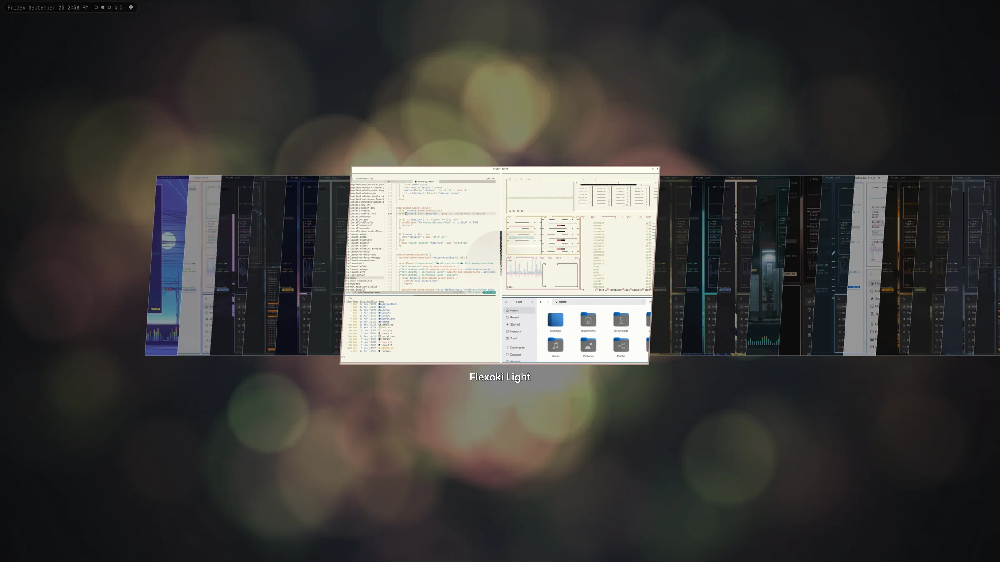
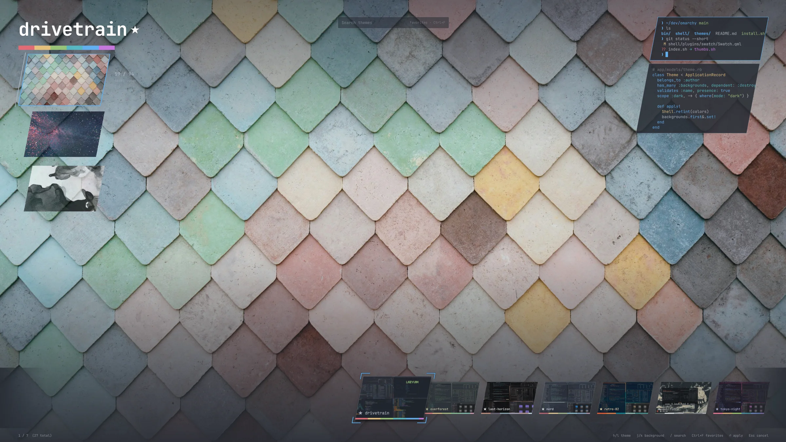

A theme is a palette and a set of wallpapers, and the stock picker shows you neither until you commit. Swatch is a filmstrip under a fixed playhead: what you land on is already wearing the theme, so the choice is made by looking rather than by remembering.
It stays instant at any collection size. Cards are painted from the palette before any image decodes, the filmstrip is recycled, and at most five screen-size wallpapers are ever resident.
jmckible.swatch. One line in the menu extension routes the hotkey and Style › Theme to it.omarchy plugin add …/omarchy-swatch.git --enable